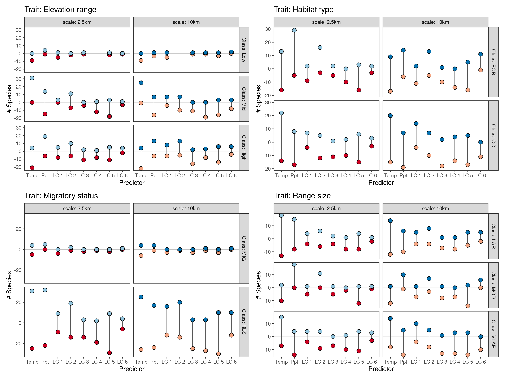

Section 8 Results: Occupancy predictors
8.1 Prepare libraries
# to load data
library(readxl)
# to handle data
library(dplyr)
library(readr)
library(forcats)
library(tidyr)
library(purrr)
library(stringr)
# to wrangle models
source("code/fun_model_estimate_collection.r")
source("code/fun_make_resp_data.r")
# plotting
library(ggplot2)
library(patchwork)
source('code/fun_plot_interaction.r')8.2 Read species trait data and the final list of species
8.3 Read model estimates
file_read <- c("data/results/occu-2.5km/occuCovs/modelEst/lc-clim-modelEst.xlsx",
"data/results/occu-10km/occuCovs/modelEst/lc-clim-modelEst.xlsx")
# read data as list column
model_est <- map(file_read, function(fr) {
md_list <- map(list_of_species, function(sn) {
readxl::read_excel(fr, sheet = sn)
})
names(md_list) <- list_of_species
return(md_list)
})
# prepare model data
scales = c("2.5km", "10km")
model_data <- tibble(crossing(scale = scales,
scientific_name = list_of_species)) %>%
arrange(desc(scale))
# rename model data components and separate predictors
names <- c("predictor", "coefficient", "se", "ci_lower",
"ci_higher", "z_value", "p_value")
# get data for plotting:
model_est <- map(model_est, function(l) {
map(l, function(df) {
colnames(df) <- names
df <- separate_interaction_terms(df)
df <- make_response_data(df)
return(df)
})
})
# add names and scales
model_est <- map(model_est, function(l) {
imap(l, function(.x, .y) {
mutate(.x, scientific_name = .y)
})
})
# add names to model estimates
names(model_est) <- scales
model_est <- imap(model_est, function(.x,.y) {
bind_rows(.x) %>%
mutate(scale = .y)
})
# remove modulators
model_est <- bind_rows(model_est) %>%
select(-matches("modulator"))
# join data to species name
model_data <- model_data %>%
left_join(model_est)8.3.1 Export data to file
8.4 Occupancy predictors’ aggregated effect
Plot the number of species affected and the direction of the effect, for each predictor. Split the data along the axes of range size, migratory status, and habitat.
# select the data
data_predictor_effect <- distinct(model_data,
scientific_name, scale,
predictor, coefficient)8.4.1 Add trait data and clean
# add trait by joining
data_predictor_effect <- data_predictor_effect %>%
left_join(species_trait, by = "scientific_name")# remove .y from predictors
data_predictor_effect <- data_predictor_effect %>%
mutate_at(.vars = c("predictor"), .funs = function(x){
stringr::str_remove(x, ".y")
})What is the direction of the predictor effect for each subset of the data by the distribution, habitat, and migratory status?
8.4.2 Get predictor effects
# first pivot the data longer
data_predictor_long <- data_predictor_effect %>%
pivot_longer(cols = c("range_size", "migratory_status", "habitat"),
names_to = "trait")
# is the coeff positive? how many positive per scale per predictor per axis of split?
data_predictor_long <- mutate(data_predictor_long,
direction = coefficient > 0) %>%
count(scale, predictor,
trait, value, direction) %>%
mutate(mag = n * (if_else(direction, 1, -1)))
# wrangle data to get nice bars
data_predictor_long <- data_predictor_long %>%
select(-n) %>%
drop_na(direction, value) %>%
mutate(direction = ifelse(direction, "positive", "negative")) %>%
pivot_wider(values_from = "mag", names_from = "direction") %>%
mutate_at(vars(positive, negative),
~if_else(is.na(.), 0, .))
data_predictor_long <- data_predictor_long %>%
pivot_longer(cols = c("negative", "positive"),
names_to = "effect",
values_to = "magnitude")
# nest the data by trait
data_predictor_long <- data_predictor_long %>%
nest(data = -trait)8.4.3 Make figures for predictor effects
# visualise the data by mapping over the nested list
data_predictor_long <- mutate(data_predictor_long,
figs = map2(data, trait, function(df, tr){
ggplot(df)+
geom_hline(yintercept = 0,
lty = 2, lwd = 0.2,
col = "grey")+
geom_col(aes(x = factor(predictor),
y = magnitude,
fill = effect))+
scale_x_discrete(guide = guide_axis(n.dodge = 2)#,
# label = 1:length(unique(df$predictor))
)+
scico::scale_fill_scico_d(palette = "berlin",
direction = -1,
begin = 0.1,
end = 0.9)+
theme_grey(base_family = "TT Arial")+
theme(legend.position = "none")+
facet_grid(value ~ scale,
labeller = label_both)+
labs(x = "predictor", y = "species",
title = glue::glue('trait: {tr}'))
}))
fig_predictor_effect <- patchwork::wrap_plots(data_predictor_long$figs,
nrow = 1)
# save plot
ggsave(fig_predictor_effect, filename = "figs/fig_predictor_effect.png",
dpi = 300,
width = 12)
8.5 Land cover or climate?
Group the predictor data by two broad classes, landcover or climate.
8.5.1 Get the effect of landcover or climate
# remove figs and unnest
data_predictor_long <- data_predictor_long %>%
select(!matches("figs")) %>%
unnest(data)
# group by predictor
data_lc_v_clim <- data_predictor_long %>%
mutate(predictor = if_else(str_detect(predictor, "bio"),
"climate", "landcover")) %>%
group_by(trait, scale, predictor, value, effect) %>%
summarise_at(.vars = c("magnitude"),
.funs = list(sum))8.5.2 Plot a figure
# make list of figures
data_lc_v_clim$figs <- pmap(data_lc_v_clim[,c("trait", "cols")],
function(trait, cols) {
ggplot(cols) +
geom_col(aes(predictor, magnitude,
fill = effect),
width = 0.4) +
scico::scale_fill_scico_d(palette = "berlin",
direction = -1,
begin = 0.1, end = 0.9)+
theme_grey(base_family = "TT Arial") +
theme(legend.position = "none") +
facet_grid(value ~ scale,
labeller = label_both) +
labs(title = glue::glue('trait: {trait}'))
})
fig_lc_v_clim <- patchwork::wrap_plots(data_lc_v_clim$figs,
nrow = 1)
# save plot
ggsave(fig_lc_v_clim, filename = "figs/fig_lc_v_clim.png",
dpi = 300)